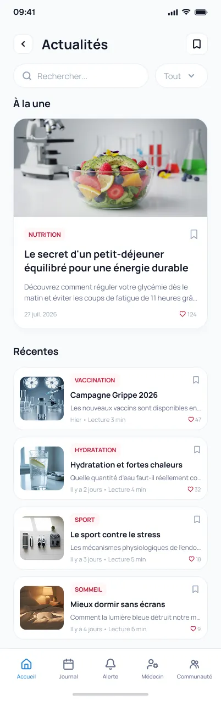
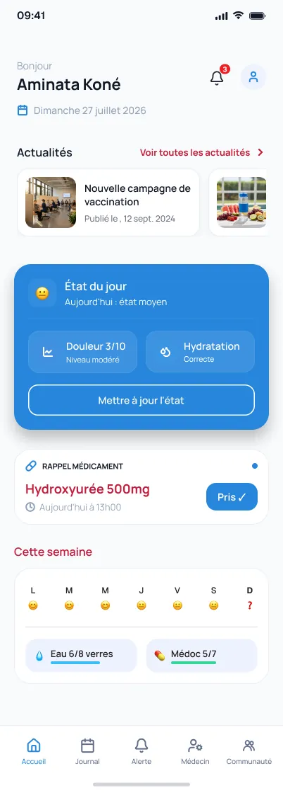
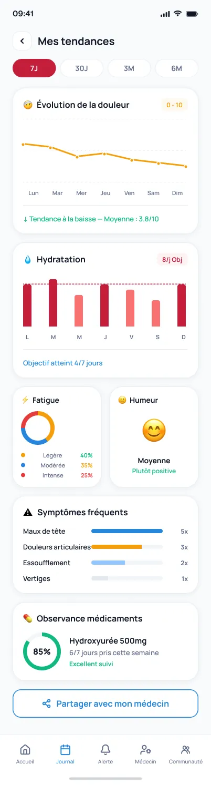

S'informer
Des fiches claires, validées par des médecins, pour connaître la maladie et avoir les bons réflexes.
- Que manger pendant une crise ?
- Combien boire par jour ?

Reconnue par l'UNESCO · programme LAB'ECD
DrepaForce accompagne les patients, leurs proches et leurs soignants. Gratuite pour les patients, l'application fonctionne même sans réseau.
Elle déforme les globules rouges. Au lieu de circuler librement, ils se bloquent dans les vaisseaux.
Résultat : des crises de douleur intenses, de la fatigue et des infections, tout au long de la vie.
Pourtant, un bon suivi au quotidien change tout. C'est le rôle de DrepaForce.
L'information, le suivi et le lien avec les soignants, réunis dans le téléphone.
Des fiches claires, validées par des médecins, pour connaître la maladie et avoir les bons réflexes.

Un journal de santé à remplir en moins de 3 minutes, et des rappels pour ne plus oublier son traitement.

Un lien direct avec son médecin et une communauté d'entraide, pour ne plus affronter la maladie seul.

Pour qui ?
Je suis
« Le soir, je note ma douleur en une minute. Avec le temps, je comprends ce qui déclenche mes crises. »

« Quand l'état de mon enfant se dégrade, je suis prévenu tout de suite et je sais quoi faire. »

« Entre deux consultations, je vois comment vont mes patients et je repère les alertes à temps. »

03 · Sur le terrain
Journal, guide d'urgence et alertes marchent sans connexion.
✓ Toujours disponibleAlertes et menus accessibles sur les téléphones basiques.
✓ Passe par le réseau GSMToujours gratuite pour les patients et les familles.
✓ Sans forfait internetChiffrées, jamais partagées sans votre accord, jamais vendues.
✓ Synchro au retour du réseau UNESCOReconnaissance · programme LAB'ECD
UNESCOReconnaissance · programme LAB'ECD
 ASSOLUD BéninAssociation de lutte contre la drépanocytose
ASSOLUD BéninAssociation de lutte contre la drépanocytose
 CUMAS & CNHUValidation médicale des contenus
CUMAS & CNHUValidation médicale des contenus
Accompagnement médical
L'équipe
Bailleur, centre de santé, institution ou association : aidez-nous à lancer le pilote au Bénin.
Écrire à l'équipe